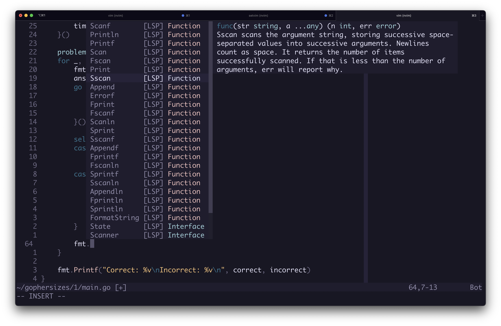

Setting up Neovim Cmp
Updated: 27/08/2023
Following on from the previous post, using Neovim LSP with just omnifunc is a bit miserable. So I'm looking to fix that.
What is Neovim completion?
It is Neovim's implementation of auto-complete, a tool you find in other editors.
As you type, Neovim will provide suggestions for what you are currently typing.
From here, you can view documentation (if provided via LSP) and auto-complete the suggestion, saving you from typing it.

How to set it up?
Install the following plugins depending on the functionality you want:
-- Provides the initial cmp implementation
use 'hrsh7th/nvim-cmp'
-- cmp source from LSP's
use 'hrsh7th/cmp-nvim-lsp'
-- cmp source for nvim in lua (makes Neovim api available)
use 'hrsh7th/cmp-nvim-lua'
-- cmp source from current buffer
use 'hrsh7th/cmp-buffer'
-- cmp source from file-system
use 'hrsh7th/cmp-path'Import cmp and setup some select opts.
local cmp = require('cmp')
local cmp_select_opts = { behavior = cmp.SelectBehavior.Select }Implement functionality:
cmp.setup({
sources = {
{ name = 'nvim_lsp' }, -- Completion from LSP
{ name = 'nvim_lua' }, -- Neovim API completion in lua
{ name = 'path' }, -- Completion based on file-system
{ name = 'buffer' }, -- Completion based on current buffer content
},
mapping = { -- Controls for handling cmp pop-ups
['<C-y>'] = cmp.mapping.confirm({ select = true }),
['<C-e>'] = cmp.mapping.abort(),
['<C-u>'] = cmp.mapping.scroll_docs(-4),
['<C-d>'] = cmp.mapping.scroll_docs(4),
['<Up>'] = cmp.mapping.select_prev_item(cmp_select_opts),
['<Down>'] = cmp.mapping.select_next_item(cmp_select_opts),
},
window = {
documentation = {
max_height = 15,
max_width = 60,
}
},
formatting = {
fields = { 'abbr', 'menu', 'kind' },
format = function(entry, item)
local short_name = {
nvim_lsp = 'LSP',
nvim_lua = 'nvim',
path = 'path',
buffer = 'buffer'
}
local menu_name = short_name[entry.source.name] or entry.source.name
item.menu = string.format('[%s]', menu_name)
return item
end,
},
preselect = 'item',
completion = {
completeopt = 'menu,menuone,noinsert'
},
})Summary
The steps to implement cmp within Neovim.
Most of this information was gathered from lsp-zero documentation, and then looking at the contents of these plugins to unpick what was happening.
I then took away anything unnecessary so I have a small, simple implementation.
I'd like to explore cmp more, using Neovim's api, when I get the time.